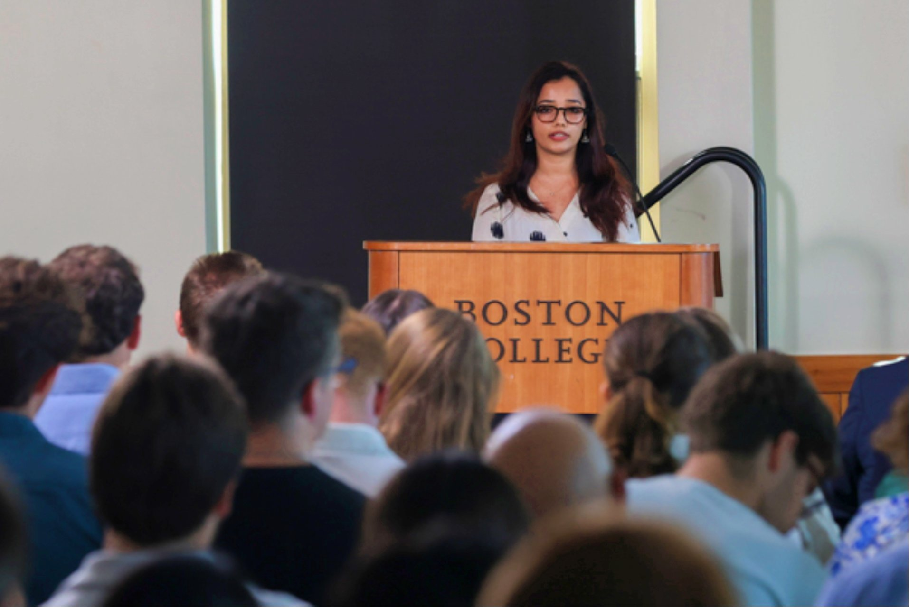

Speaking at the Clough Center, Boston College · 2025
Get in touch
fazli.salim@bc.eduI am a doctoral candidate at the Department of Psychology and Neuroscience, Boston College. I did not arrive at social psychology directly. I started with history and philosophy at the University of Delhi, where I became increasingly drawn to understanding how the world came to look the way it does. While history taught me that change is rarely clean, philosophy taught me to sit with questions longer than is comfortable.
But what actually controls people's everyday lives at this very moment? Wrestling with the question, I landed at public administration for my masters. At that time, the answer seemed simple, it was systems that defined our lives, for instance, policies, institutions, bureaucracies, and the people who built these systems, often without asking the people who had to live inside them. But something was still missing. History reminded me that people do not just absorb systems. They push back, find workarounds, organize, resist, and lead to social change. That gap between what a policy expects and what a person actually does became a question I could not unsee. Understanding it required going deeper into human behavior, which led me, eventually, to write my dissertation in environmental psychology in an developmental studies focused M.Phil.
That path led me to Boston College, where I am a Ph.D. candidate in the Social Influence and Social Change Lab, directed by Dr. Gregg Sparkman, and a Doctoral Fellow at The Clough Center for the Study of Constitutional Democracy. Before Boston College, I worked across India — with solar energy non-profits, science institutions, and government bodies — each of which sharpened my conviction that research questions must be connected to the grassroots.
Currently
Outside the lab, I cook and mix recipes from wherever I've been, hike when I can, crochet when I am patient enough, and have a weakness for obscure history and forgotten things. I am slowly collecting more languages. I believe that an academic who only lives inside their research eventually stops seeing it clearly.
I care deeply about mentorship. I was guided through doors that are not easy to find, and I try to pay that forward through the NextGen Psych Scholars Program and the Pre-Doctoral Mentorship Program at Boston College.
I find that a good line of poetry can cut through what paragraphs of careful prose cannot.
ہم دیکھیں گے
لازم ہے کہ ہم بھی دیکھیں گے
We shall witness — it is certain that we too shall witness
— Faiz Ahmed Faiz